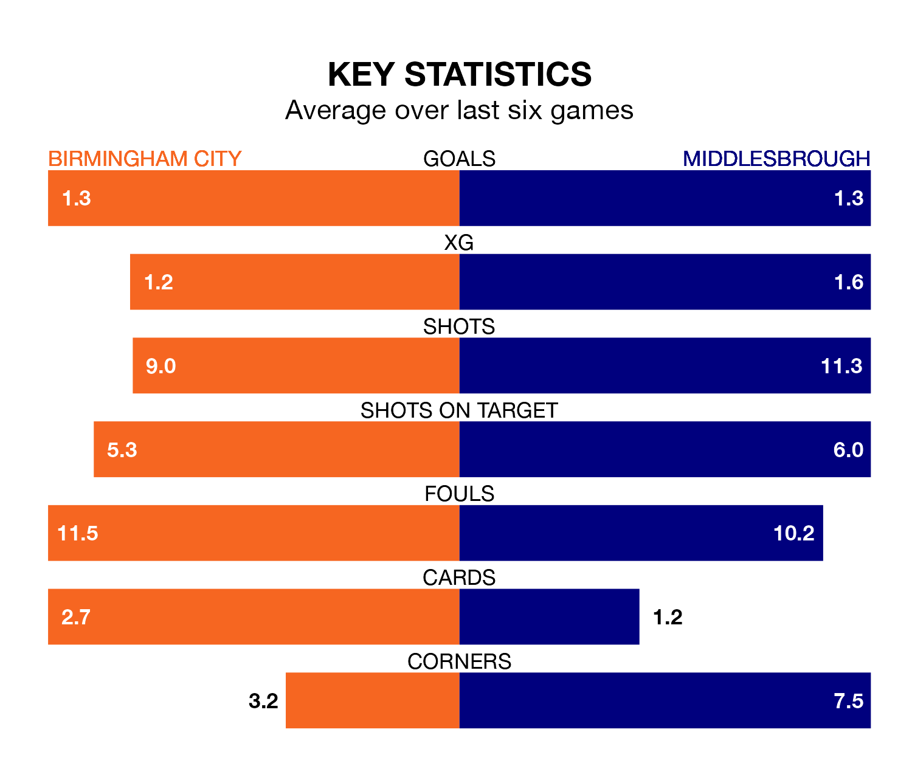

Middlesbrough travel to Birmingham City on Saturday in EFL Championship.
The visitors come into the game on the back of a draw in their last match, having tied with Rotherham United 1-1 at home, with a goal from Marcus Forss.
The Blues, meanwhile, won their last match, 2-1 against Stoke City, with their goals scored by Juninho Bacuna and Jay Stansfield.
In the last 10 years, Birmingham and Middlesbrough have played each other on 18 occasions. Birmingham won three of them, Middlesbrough 11, and they drew four times.
On average, the Blues scored 0.7 goals and the Boro 1.5 in those matches.
Their last meeting was on October 21, when Middlesbrough won 1-0 at home.
With 34 goals in 28 games so far this season, Birmingham are scoring at below the league average rate with 1.2 goals per game. And they are conceding more than average, letting in 44 goals at a rate of 1.6 per game.
Middlesbrough, meanwhile, are above average scorers, with 1.5 goals per game, compared to a league average of 1.4. They have also conceded 1.5 goals per game.
City are 20th in the table after 28 games, of which they have won eight and drawn eight, earning 32 points.
The Boro are nine places ahead of the Blues in 11th, with 12 wins and four draws putting them on 40 points.
The hosts are in disappointing form in EFL Championship, with one win and three draws from their last six games.
With three wins and a draw over that period, the away team's form is better – they have taken 10 points from 18, compared to Birmingham's six.
Updated: 09:07 (UTC), 24/01/24